Loteamento com portaria · Bairro Bela Vista · Indaiatuba/SP
Atualizado em 23/11/2026 · tabela Kaaba recebida em nov/2026 · Fabio Correia, CRECI 303686-F
Loteamento da Kaaba Empreendimentos na Alameda José Amstalden, com 239 lotes de 300,00 a 479,41 m² em 15 quadras, portaria e muro. Na tabela Kaaba recebida em nov/2026 o metro custa R$ 1.450, e o pool de vendas da Kaaba salvo em 26/10/2026 lista 54 lotes disponíveis, de R$ 435.000,00 a R$ 527.437,50. Previsão de entrega em 12/2026.
A partir de R$ 435.000,00lote de 300 m² · R$ 1.450/m² · entrada de 10% ou 20% e saldo em até 72x com juros de 0,7% a.m. · tabela Kaaba recebida em nov/2026
Foto real de drone de 08/05/2026: a portaria, de frente para a Alameda José Amstalden
O empreendimento
O Terras de Obwalden é um loteamento na Alameda José Amstalden, no Bairro Bela Vista, em Indaiatuba. A realização e a incorporação são da Kaaba Empreendimentos, segundo o folheto. No projeto urbanístico o empreendimento se chama Jardim Obwalden, e a proprietária da área é a Jardim Obwalden SPE Ltda., CNPJ 23.241.175/0001-96 (SPE, Sociedade de Propósito Específico, é a empresa criada só para o empreendimento).
Pelo quadro de áreas do projeto, são 239 lotes em 15 quadras, de A a O. Os lotes vão de 300,00 a 479,41 m², e 165 deles têm 300 m², medindo 12 x 25 m. Segundo o folheto, o conceito arquitetônico se inspira na tradição suíça; Obwalden é o nome de um cantão da Suíça.
lotes em 15 quadras, no projeto
área de 165 dos 239 lotes
o m² na tabela Kaaba recebida em nov/2026
lotes disponíveis no pool de vendas da Kaaba de 26/10/2026
| Área | m² | % da gleba |
|---|---|---|
| Lotes (239) | 73.392,58 | 50,99% |
| Sistema viário | 34.566,13 | 24,01% |
| Área institucional | 7.197,25 | 5,00% |
| Sistemas de lazer (3 áreas) | 8.636,70 | 6,00% |
| Área verde e APP | 20.152,30 | 14,00% |
| Total da gleba | 143.944,96 | 100% |
APP é Área de Preservação Permanente. Os números são os do quadro de áreas impresso na planta do projeto. A planta também prevê 4 vielas de passagem, de 100 m² cada, entre as ruas internas e as divisas do loteamento.
Preços e condições
Na tabela Kaaba recebida em nov/2026, os 239 lotes têm o mesmo preço por metro, R$ 1.450, e o valor depende só da área. A tabela não traz data impressa nem a situação de cada lote e manda consultar o pool de vendas. O pool salvo em 26/10/2026 repete o valor de R$ 1.450 o m² e lista 54 lotes disponíveis e 3 reservados.
Entre os disponíveis, 44 têm 300 m² e saem por R$ 435.000,00 cada. O maior é o lote 18 da quadra J, com 363,75 m², por R$ 527.437,50. O pool marca os lotes A-31 e B-06 como lotes com viela sanitária: pergunte no atendimento o que isso muda no uso do lote.
| Área do lote | Lotes disponíveis | Valor de tabela |
|---|---|---|
| 300,00 m² | 44 | R$ 435.000,00 |
| 300,64 a 325,00 m² | 6 | de R$ 435.928,00 a R$ 471.250,00 |
| 330,74 a 363,75 m² | 4 | de R$ 479.573,00 a R$ 527.437,50 |
As parcelas são as da própria tabela Kaaba, que conferimos pela tabela Price. A planilha calcula as parcelas com taxa de 0,7%, numa célula sem rótulo; pelos prazos de 12 a 72, lemos como juros de 0,7% ao mês em parcelas mensais, o equivalente a cerca de 8,73% ao ano. O total pago soma a entrada e as parcelas, sem correção: a tabela não informa índice de correção. Confirme taxa, periodicidade e correção no atendimento antes de fechar.
| Parcelas | Entrada de 10% (R$ 43.500,00) e saldo de R$ 391.500,00: parcela e total pago | Entrada de 20% (R$ 87.000,00) e saldo de R$ 348.000,00: parcela e total pago |
|---|---|---|
| 12x | R$ 34.128,42 · total R$ 453.041,03 | R$ 30.336,37 · total R$ 451.036,47 |
| 24x | R$ 17.777,99 · total R$ 470.171,83 | R$ 15.802,66 · total R$ 466.263,85 |
| 36x | R$ 12.340,56 · total R$ 487.760,09 | R$ 10.969,38 · total R$ 481.897,86 |
| 48x | R$ 9.631,34 · total R$ 505.804,22 | R$ 8.561,19 · total R$ 497.937,08 |
| 60x | R$ 8.013,37 · total R$ 524.301,98 | R$ 7.122,99 · total R$ 514.379,54 |
| 72x | R$ 6.940,98 · total R$ 543.250,55 | R$ 6.169,76 · total R$ 531.222,71 |
O folheto da Kaaba fala em financiamento direto com a empreendedora. A tabela não traz desconto à vista nem parcelas intermediárias; pedimos a simulação para o lote escolhido.
A tabela Kaaba recebida em nov/2026 não tem data impressa: confirme valor e disponibilidade no atendimento antes de qualquer proposta.
Obras
As fotos de drone enviadas pela Kaaba mostram o andamento em 2026. Em 30/03/2026 as ruas já aparecem asfaltadas, com guias e postes, há muro em trechos da divisa e a portaria está erguida. Em 23/04/2026, máquinas ainda faziam terraplenagem em parte do terreno. Em 08/05/2026 a portaria aparece com portões, acabamento e o letreiro do Terras de Obwalden.
É a nossa leitura das fotos. Previsão de entrega em 12/2026. Não dá para conferir por foto a rede de água e esgoto, a drenagem e a energia. Na apresentação de 2024, portaria, muro, rede de água e esgoto, drenagem e guias e sarjetas apareciam como obras em andamento.
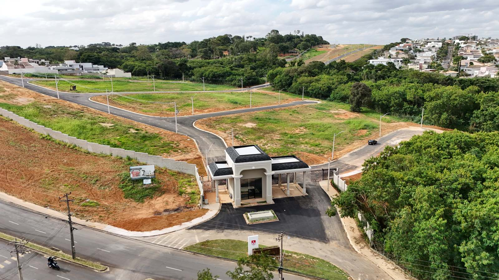
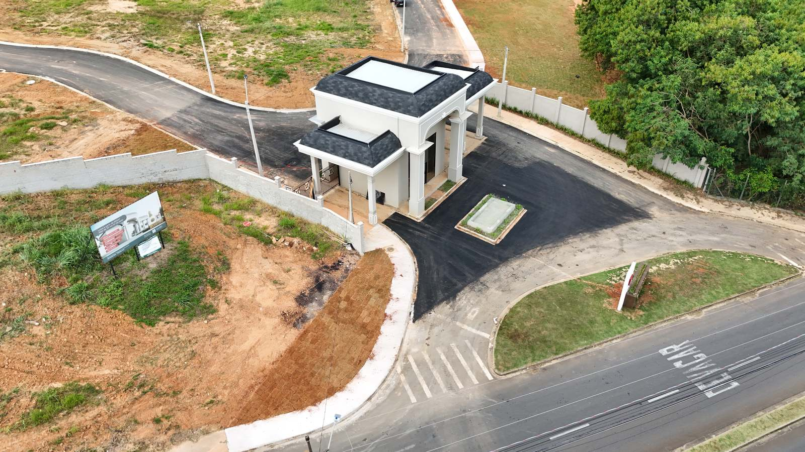
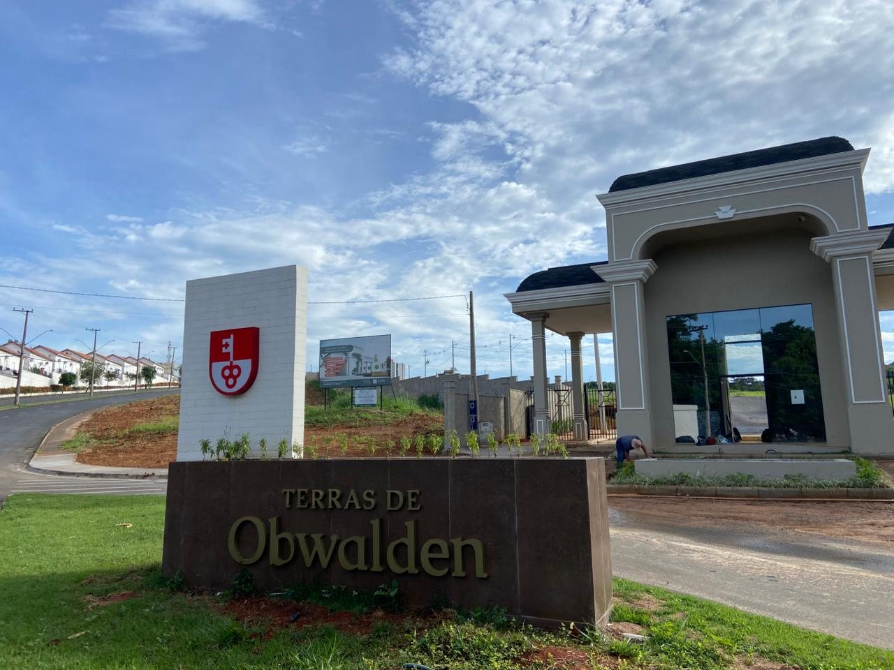
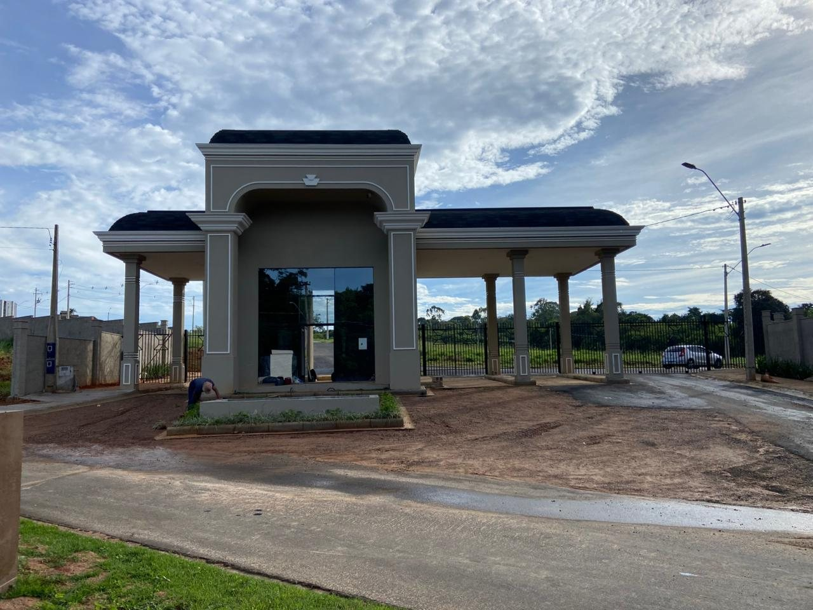
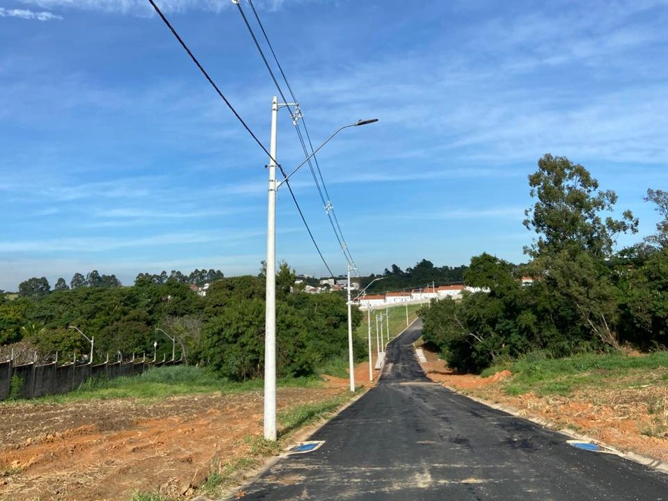
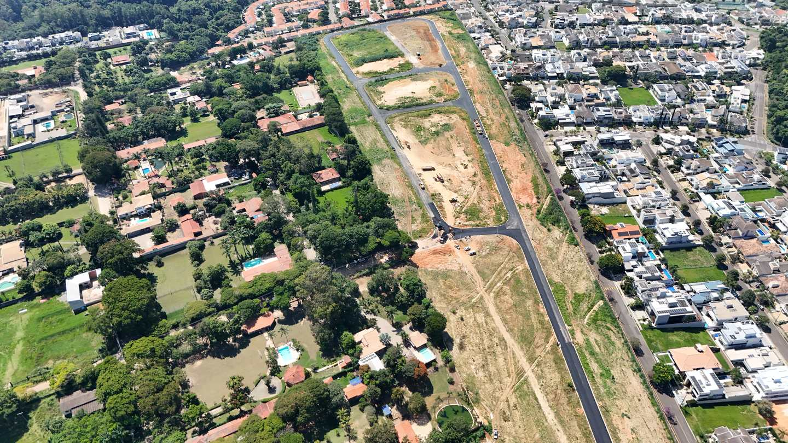
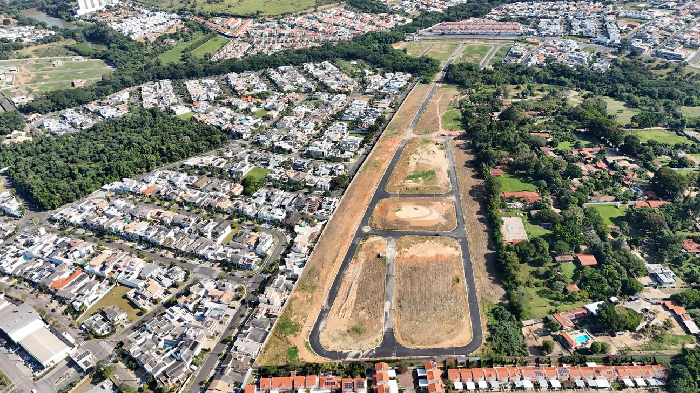
Lazer
A lista junta a apresentação de 2024, o folheto e o folder da Kaaba. A portaria já aparece construída nas fotos de maio/2026; os itens abaixo são previstos e, por enquanto, só aparecem em imagens ilustrativas. Pela implantação, o clube fica na ponta nordeste do loteamento, no sistema de lazer 03, de 3.478,16 m², que o projeto classifica como espaço livre de uso público.
O material da Kaaba informa que todas as imagens, inclusive desenhos e fotografias, são meramente ilustrativas, e não traz prazo para o lazer.
Imagens ilustrativas
Perspectivas da apresentação de 2024 da Kaaba, que informa que todas as imagens do material são meramente ilustrativas. Nenhum destes espaços aparece construído nas fotos de abril e maio/2026.
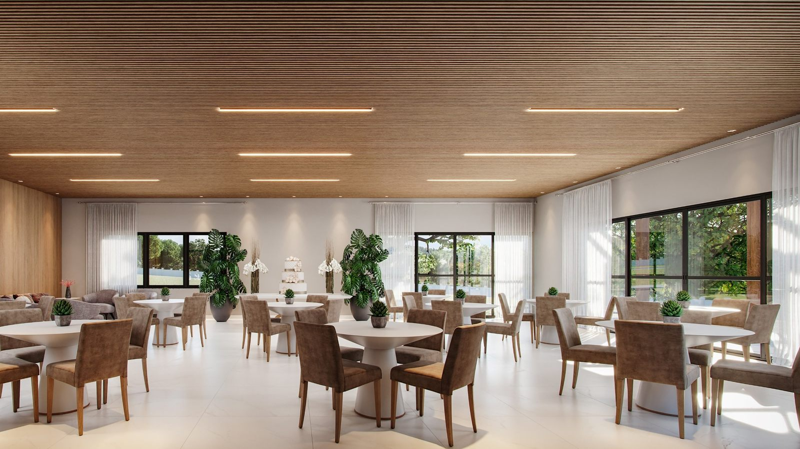
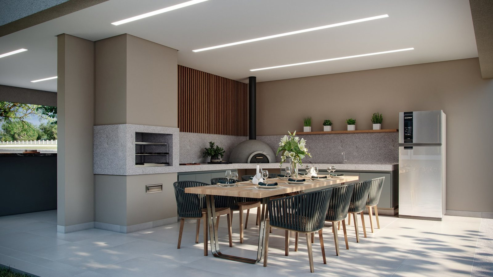
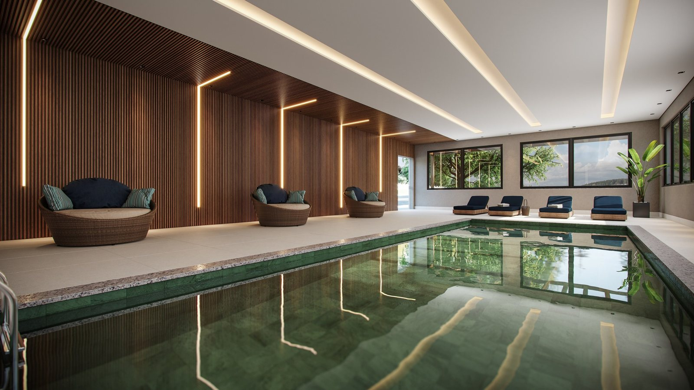
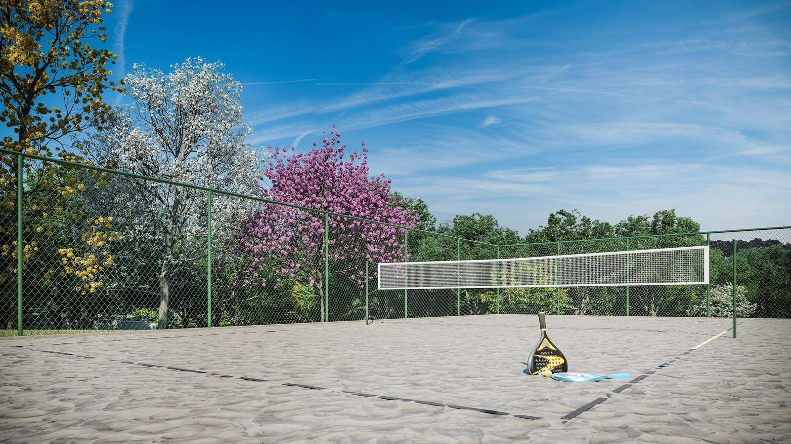
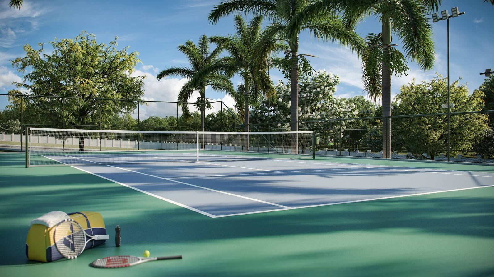
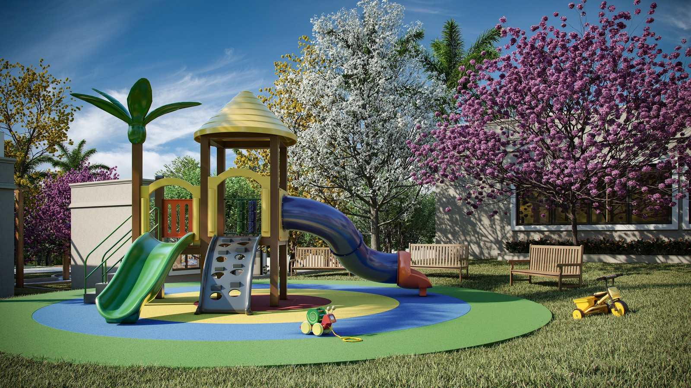
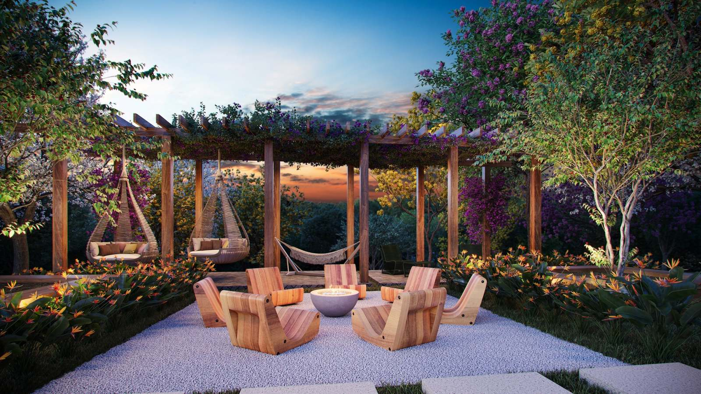
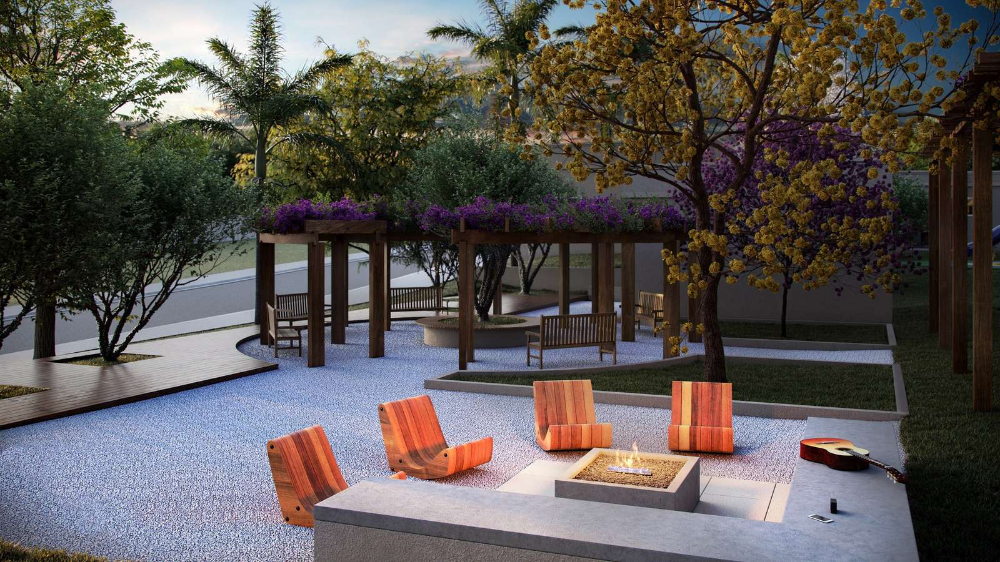
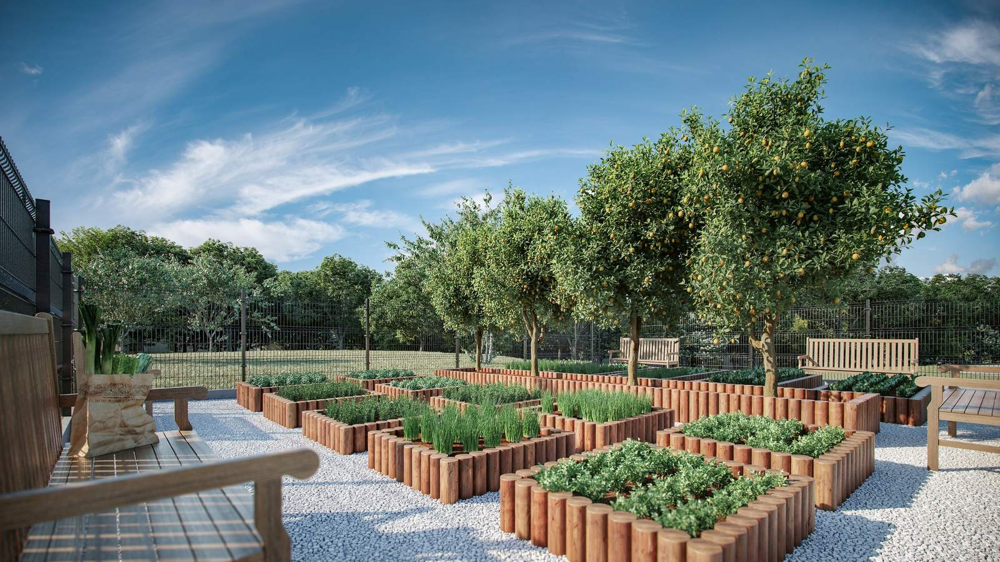
Ficha técnica
Documentação
O que o material da Kaaba diz e o que ainda falta confirmar com a loteadora.
O material da Kaaba chama o empreendimento de loteamento, e o projeto urbanístico é de parcelamento do solo, com ruas, área institucional, área verde e sistemas de lazer como áreas públicas. A planta prevê 4 vielas de passagem, de 100 m² cada, entre as ruas internas e as divisas, e o clube fica num sistema de lazer que o projeto classifica como espaço livre de uso público. As fotos de 2026 mostram portaria com portões e muro em trechos da divisa. Associação, taxa mensal e regulamento de acesso não constam no material: pergunte no atendimento como ficam o acesso e o uso do clube.
O folheto cita a matrícula nº 80.446 do Cartório de Registro de Imóveis de Indaiatuba. Na planta do projeto, esse número aparece como matrícula da gleba. O número do registro do loteamento não consta no material: peça a matrícula atualizada antes de assinar.
A planta do projeto tem carimbo da Prefeitura de Indaiatuba de projeto vistado e de acordo com as diretrizes municipais, com data de 10/01/2022. O decreto de aprovação do loteamento, o certificado do Graprohab e o termo de verificação de obras não constam no material: peça esses documentos e a matrícula atualizada antes de assinar.
Recuos, taxa de ocupação e prazo para construir não constam no material recebido. Peça o regulamento antes de fechar.
Previsão de entrega em 12/2026.
A tabela traz juros de 0,7% ao mês pela tabela Price, mas não informa índice de correção. Confirme no atendimento antes de assinar.
Localização
O endereço do projeto é Alameda José Amstalden, s/nº, Bairro Bela Vista, em Indaiatuba/SP. A portaria fica de frente para a alameda, como mostram as fotos de drone. O mapa abaixo mostra o ponto cadastrado no Google como Loteamento Terras de Obwalden.
O mapa do folheto, sem escala, marca como referências a Av. Eng. Fábio R. Barnabé, a Rua 24 de Maio, a Rodovia João Ceccon, o Parque Ecológico, o Colégio Objetivo, o Centro e a Prefeitura, e indica as direções de Elias Fausto, Monte Mor e Campinas. O material não informa distâncias.
Perguntas frequentes
Na tabela Kaaba recebida em nov/2026 o metro quadrado custa R$ 1.450, igual para todos os lotes. O lote de 300 m² sai por R$ 435.000,00. O maior lote disponível no pool de vendas da Kaaba de 26/10/2026 é o 18 da quadra J, com 363,75 m², por R$ 527.437,50. Confirme valor e disponibilidade no atendimento.
A tabela traz entrada de 10% ou de 20% e saldo em 12, 24, 36, 48, 60 ou 72 parcelas mensais, com juros de 0,7% ao mês pela tabela Price. No lote de 300 m², com entrada de R$ 43.500,00, o saldo de R$ 391.500,00 fica em 72 parcelas de R$ 6.940,98, R$ 543.250,55 no total com a entrada, sem a correção, que a tabela não informa. A taxa está numa célula sem rótulo da planilha: confirme taxa e periodicidade no atendimento. O folheto fala em financiamento direto com a empreendedora.
De 300,00 a 479,41 m², segundo a tabela da Kaaba e as medidas da planta do projeto. Dos 239 lotes, 165 têm 300 m² e medem 12 x 25 m. Entre os disponíveis no pool de vendas da Kaaba de 26/10/2026, as áreas vão de 300,00 a 363,75 m².
O pool de vendas da Kaaba salvo em 26/10/2026 lista 54 lotes disponíveis e 3 reservados, dos 239 do projeto; 44 dos disponíveis têm 300 m². A disponibilidade muda a cada venda: confirmamos com a Kaaba antes de qualquer proposta.
O material da Kaaba chama o empreendimento de loteamento, e o projeto urbanístico é de parcelamento do solo, com ruas, área institucional, área verde e sistemas de lazer como áreas públicas. As fotos de 2026 mostram portaria com portões e muro em trechos da divisa. A planta prevê 4 vielas de passagem, de 100 m² cada, entre as ruas internas e as divisas, e o clube fica num sistema de lazer que o projeto classifica como espaço livre de uso público. Associação de moradores, taxa mensal e regulamento de acesso não constam no material; pergunte no atendimento como ficam o acesso e o uso do clube antes de decidir.
O folheto cita a matrícula nº 80.446 do Cartório de Registro de Imóveis de Indaiatuba, que na planta do projeto aparece como matrícula da gleba. A planta tem carimbo da Prefeitura de projeto vistado e de acordo com as diretrizes municipais em 10/01/2022. O número do registro do loteamento na matrícula, o decreto de aprovação, o certificado do Graprohab e o termo de verificação de obras não constam no material: peça esses documentos e a matrícula atualizada antes de assinar.
Na Alameda José Amstalden, s/nº, Bairro Bela Vista, em Indaiatuba/SP, com a portaria de frente para a alameda. O mapa do folheto marca como referências a Av. Eng. Fábio R. Barnabé, a Rua 24 de Maio, a Rodovia João Ceccon e o Parque Ecológico, sem informar distâncias.
Nas fotos de drone de março a maio de 2026, as ruas aparecem asfaltadas, com guias e postes, há muro em trechos da divisa e a portaria aparece construída, com letreiro; em abril ainda havia terraplenagem em parte do terreno. É a nossa leitura das fotos, e não dá para conferir por foto a rede de água e esgoto, a drenagem e a energia. O lazer previsto tem 17 espaços, entre eles salão de festas, dois espaços gourmet, academia, spa, quadras de tênis, de beach tennis e de street ball, playground, pet place e horta, e por enquanto só aparece em imagens ilustrativas. Previsão de entrega em 12/2026.
Antes de comprar
No lote de 300 m² (R$ 435.000,00), a entrada de 20% é R$ 87.000,00 e o saldo de R$ 348.000,00 fica em 12 parcelas de R$ 30.336,37, 24 de R$ 15.802,66, 36 de R$ 10.969,38, 48 de R$ 8.561,19, 60 de R$ 7.122,99 ou 72 de R$ 6.169,76, pela tabela Kaaba recebida em nov/2026. A tabela não informa índice de correção.
No lote de 300 m² com entrada de 10%, o total pago é R$ 453.041,03 em 12 parcelas e R$ 543.250,55 em 72, sem a correção, que a tabela não informa. A diferença vem dos juros de 0,7% ao mês, cerca de 8,73% ao ano.
Não. A tabela Kaaba recebida em nov/2026 não traz desconto à vista nem parcela anual: o pagamento é entrada de 10% ou 20% e saldo em parcelas mensais. Pedimos à Kaaba a simulação do lote escolhido.
No pool de 26/10/2026, a R$ 1.450 o m²: 6 lotes de 300,64 a 325,00 m², de R$ 435.928,00 a R$ 471.250,00, e 4 lotes de 330,74 a 363,75 m², de R$ 479.573,00 a R$ 527.437,50.
O maior tem 479,41 m² e sai por R$ 695.144,50, a R$ 1.450 o m². Ele não está entre os disponíveis do pool de 26/10/2026, em que o maior é o J-18, de 363,75 m².
O pool de 26/10/2026 marca 5 lotes como "venda à vista" (D-18, M-3, M-17, N-3 e N-14) e 3 como reservados (J-2, K-11 e N-17). A planilha não explica se os de "venda à vista" só aceitam pagamento à vista: confirmamos com a Kaaba.
A previsão é dezembro/2026. Segundo a Kaaba (16/11/2026), a liberação para construir está em tramitação na Prefeitura; confirmamos a data antes de você assinar.
Sim. A página tem fotos de drone de 30/03, 23/04 e 08/05/2026, e a Kaaba enviou também vídeo de drone de abril/2026, que mandamos pelo WhatsApp.
O projeto urbanístico traz a Jardim Obwalden SPE Ltda., CNPJ 23.241.175/0001-96, como proprietária (SPE é a empresa criada só para o empreendimento); a Kaaba assina a realização e a incorporação. O material não diz quem assina o contrato: confirmamos antes da proposta.
A gleba tem 143.944,96 m²: lotes ocupam 50,99%, ruas 24,01%, área verde e APP 14% (20.152,30 m², em duas APPs de 7.275,11 e 12.877,19 m²), sistemas de lazer 6% e área institucional 5% (7.197,25 m²).
Pelo projeto urbanístico, 8.636,70 m² de sistemas de lazer, em 3 áreas (896,31, 4.262,23 e 3.478,16 m²). O material de venda fala em "mais de 20.000 m² de puro lazer"; no projeto, perto disso só está a área verde e APP (20.152,30 m²), que é contada à parte.
O projeto tem uma avenida de 24 m com canteiro central e ruas de 14 m. As fotos de maio/2026 mostram as ruas asfaltadas, com guias e postes.
São 239 lotes em 15 quadras: A com 31, B 13, C 17, D 20, E 9, F 16, G 3, H 12, I 16, J 18, K 11, L 21, M 17, N 17 e O 18.
A apresentação de 2024 mostrava a rede de água e esgoto, a drenagem e as guias e sarjetas em obra. As fotos de 2026 não permitem conferir as redes, e o material não diz se a ligação é com o SAAE nem traz o termo de conclusão: pedimos à Kaaba antes da proposta.
Na ponta nordeste, no sistema de lazer 03, de 3.478,16 m², que o projeto classifica como espaço livre de uso público.
Estão previstos brinquedoteca e playground, além de academia ao ar livre, segundo a apresentação e o folder da Kaaba. Por enquanto aparecem só em imagens ilustrativas.
Obwalden é um cantão da Suíça, e o folheto diz que o conceito arquitetônico se inspira na tradição suíça.
Sim: o Reserva da Colina, também da Kaaba, a cerca de 1,5 km em linha reta (medida nossa entre os pontos do Google Maps, 22/11/2026), já entregue, com lotes a partir de R$ 400.500 (300 m², tabela recebida em nov/2026).
No site, dois loteamentos da Kaaba aparecem como entregues: o Reserva da Colina, a partir de R$ 400.500 (300 m²), e o Jardim Siena, em Itaici, a partir de R$ 300.000 (250 m²), pelas tabelas recebidas em nov/2026.
O Jardim Residencial Belle Vista, da Kaaba, no Mato Dentro, a partir de R$ 360.000 (300 m², tabela recebida em nov/2026), e o Alpnach Residence, da Dominium, a partir de R$ 510.000 (300 m², tabela de nov/2026).
Para a reserva e o contrato, o padrão é: RG e CPF (ou CNH), certidão de nascimento (solteiro) ou de casamento (casado), comprovante de endereço atualizado e comprovante de renda dos 3 últimos meses. Se for usar financiamento da Caixa (terreno e construção), entram também os 2 últimos holerites, a declaração do Imposto de Renda com o recibo de entrega, a Carteira de Trabalho (pode ser a digital), o extrato do FGTS tirado no app FGTS e, se você for casado, os documentos do cônjuge. Cada loteadora ou banco pode pedir algum documento a mais: a lista final a gente confirma na reserva.
Em Indaiatuba, o ITBI é de 2% sobre a base de cálculo até 15.000 UFESP (R$ 576.300,00 em 2026) e de 2,5% só na parte que passar disso (Lei Complementar municipal 102/2023, art. 137, segundo a página de perguntas frequentes do ITBI da Prefeitura, consultada em 22/11/2026). No exemplo da Prefeitura, uma base de R$ 400.000,00 dá R$ 8.000,00 de imposto. Ele é pago quando a escritura ou o contrato definitivo vai para o cartório; na compra parcelada direto com a loteadora, o contrato diz quando a escritura é passada. A guia da Prefeitura pode ser parcelada em até 4 vezes, mas o registro na matrícula só sai com tudo quitado; mais detalhes em ITBI, escritura e registro em Indaiatuba.
Só o lote, não: a Caixa não permite usar o FGTS para comprar terreno sem construção (página “FGTS para casa própria”, consultada em 22/11/2026). O FGTS pode entrar se você financiar o terreno junto com a construção da casa pela linha “Aquisição de terreno e construção” da Caixa, se a loteadora aceitar essa forma de pagamento, com as regras de sempre: 3 anos de FGTS, nenhum financiamento ativo no SFH e não ter imóvel residencial na cidade onde mora ou trabalha. Depois, o FGTS também pode ajudar a construir a casa, mas só com o terreno já registrado no seu nome; na compra parcelada com a loteadora, isso só acontece com a escritura.
Pela Lei 6.766/1979, art. 32-A (incluído pela Lei 13.786/2018; texto do planalto.gov.br consultado em 22/11/2026), a loteadora devolve o que você pagou, corrigido pelo índice do contrato, podendo descontar multa e despesas de até 10% do valor atualizado do contrato, além de outros itens que a lei lista, como IPTU e taxas do lote em aberto e, se você já tinha a posse, um valor pelo uso. A devolução é em até 12 parcelas mensais, que começam até 180 dias depois do prazo de conclusão das obras, se o loteamento ainda está em obra, ou até 12 meses depois do desfazimento, se as obras já terminaram. Essa regra vale para o compromisso de compra e venda; contrato com alienação fiduciária segue a Lei 9.514/1997 (art. 32-A, § 3º). O quadro-resumo do contrato tem de mostrar as consequências da desistência em destaque (art. 26-A, V).
Patrimônio de afetação é regra de incorporação (prédios e casas em condomínio); no loteamento, a proteção é o registro. A Lei 6.766/1979 proíbe vender lote de loteamento não registrado (art. 37) e, para registrar, a loteadora entrega certidões e, se as obras não estiverem prontas, um cronograma de até 4 anos com garantia de execução das obras (art. 18; texto do planalto.gov.br consultado em 22/11/2026). O processo do loteamento no cartório pode ser examinado por qualquer pessoa, sem custo (art. 24). Antes de assinar, a gente pede com você a certidão de matrícula do lote.
Na compra parcelada direto com a loteadora, cada empresa tem o seu critério de análise de renda e cadastro; a gente confirma com a loteadora antes da proposta. Se for financiar pela Caixa (terreno e construção), a prestação não pode passar de 30% da renda familiar mensal bruta (página “Aquisição de terreno e construção” da Caixa, consultada em 22/11/2026). O valor aprovado sai na simulação e é sujeito a análise de crédito.
Dá. Cada loteadora tem o seu critério; o mais comum é pedir conta em banco no Brasil, e a gente confirma com a loteadora antes de você assinar. Fazemos a visita por vídeo. O passo a passo está em Comprar imóvel na planta morando fora e, em inglês, em Buying property in Indaiatuba from abroad.
Confirmamos com a Kaaba quais lotes seguem disponíveis, mandamos a tabela com quadra, metragem e valor e simulamos a entrada de 10% ou 20% com saldo em até 72 parcelas com juros.
Todos os lançamentos em Indaiatuba